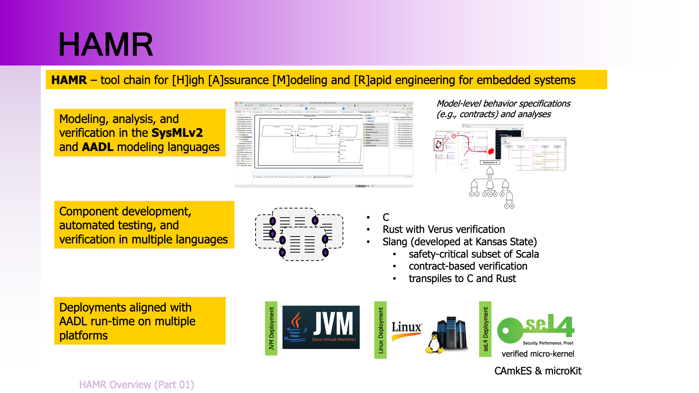
HAMR is a tool chain for building high assurance embedded systems using integrated formal methods. It emphasizes three layers of development.
-
The first layer emphasizes modeling, analysis and verification in the SysMLv2 and AADL modeling languages. At this layer, HAMR supports optional use of developer-friendly formal specifications and contract languages to specify both desired behavior and architecture constraints.
-
Given system models, HAMR can auto-generate application component skeletons and associated infrastructure glue code in multiple languages. Developers can program the application behavior of these components in multiple languages including C, Rust, and Slang. HAMR component development using Rust is designed to support automated property-based testing and automated formal verification using the Verus SMT-based verification tool. HAMR’s code-level testing and verification utilizes contract information that is automatically injected into the code based on model-level contracts. A lot of these capabilities were originally developed for Slang, a safety-critical subset of Scala developed at Kansas State University. Slang programs can be automatically verified to conform to contracts using the Logika verifier tool. Slang can also be transpiled to C and Rust.
-
HAMR supports deployments on multiple platforms including the Java Virtual Machine, Linux and macOS, and the seL4 verified microkernel.
A key theme of HAMR is the incorporation of developer-friendly formal methods that are integrated to work synergistically across the three development layers above. For example, in models, developers can include behavior contracts written the GUMBO contract language. When HAMR generates code, it translates GUMBO contract down into source code contract languages. This enables code level verification tools (e.g., Verus for Rust, and Logika for Slang) to verify the application code conforms to code-level and model-level contracts. HAMR also generates infrastructure for property-based testing against GUMBO-derived test oracles, allowing developers to seamlessly switch between using testing and formal verification to ensure that application conforms to contracts. HAMR deploys code on the seL4 micro-kernel, whose functionality and partitioning have been mathematically proven correct in the Isabelle theorem prover. HAMR’s run-time semantics is modeled in the Isabelle theorem prover, which guides HAMR implementation and enables to prove the soundness of HAMR analysis and verification techniques. HAMR’s application assurance framework helps developers organize correctness claims about their system and to manage the accumulation of assurance evidence for those claims across all three layers of development.
HAMR Application Areas
Let’s take a quick look at different types of systems that are being built with HAMR.
Collins Aerospace Small UAVs
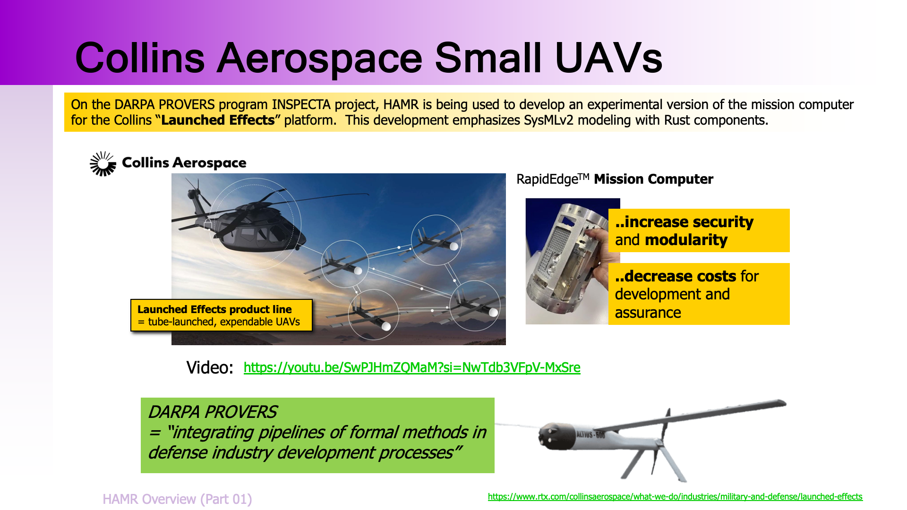
HAMR has been developed primarily at Kansas State University in several DARPA projects led by Collins Aerospace. These projects include a number of other industry and academic collaborators. The Collins Aerospace INSPECTA project, part of the DARPA PROVERS program, focuses on integrating pipelines of formal methods in defense industry development processes. On PROVERS, HAMR is being used to develop an experimental version of the Rapid Edge mission computer for Collins Launched Effects platform. The Launched Effects product line includes small expendable UAVs that can be launched from tubes either in the air or on the ground.
The primary goals of the HAMR-based development are to improve the modularity and security while decreasing costs the of development and the assurance time.
US Army Ground Vehicles
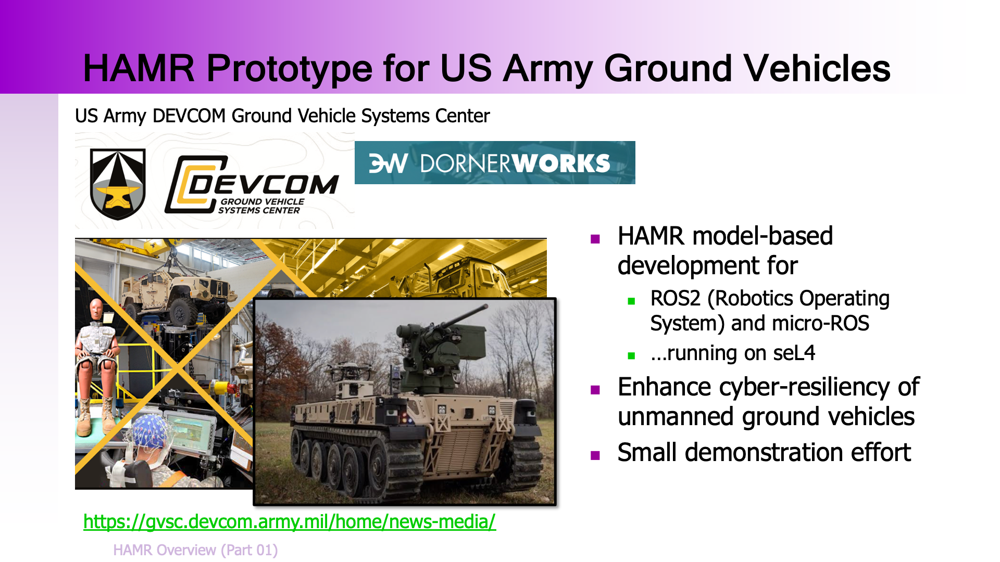
In collaboration Dornerworks, we’re extending HAMR to support model-based development for ROS 2 - the latest version of the Robotics Operating System as well as resource-contrained version of ROS called micro-ROS. This new backend also supports deployment of ROS on seL4 using infrastructure developed by Dornerworks. ROS is used by the U.S. Army in their unmanned ground vehicles and robotic tanks.
Nuclear Reactor Trip Systems
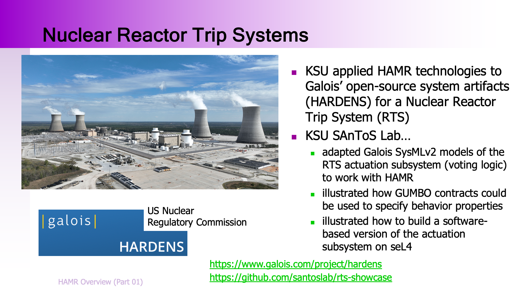
Some of our collaborators at Galois were funded by the U.S. Regulatory Commission to develop open source artifacts that illustrate how model-based development could be applied to Nuclear Reactor Trip Systems, the safety systems that shutdown a nuclear reactor if something is going wrong. Our research group adapted Galois’s SysMLv2 artifacts for the actuation subsystem to work with HAMR. We also illustrated how GUMBO contracts could be used to specify the required behavior properties for this subsystem, and we illustrated how the actuation logic could be implemented in proven correct Rust code running on seL4. You can see all of the HAMR-based models and system implementations at the R.T.S. showcase Git Hub link at the bottom of the slide. *****
Isolette Infant Incubator System
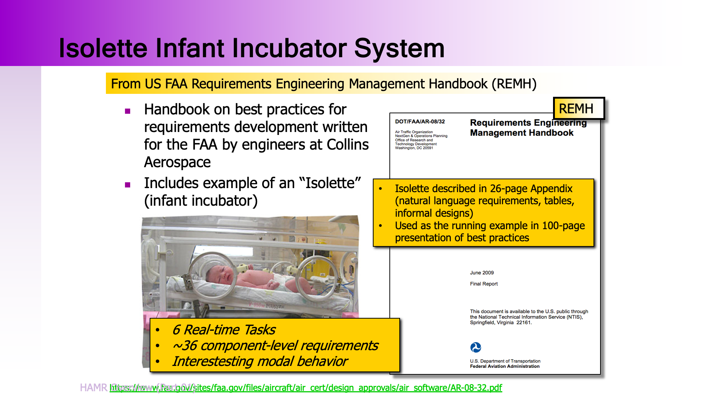
We’ve used Isolette infant incubator system extensively in teaching and in illustrating to our industry partners how HAMR works. Our Isolette system is based on a set of requirements and informal designs presented in the U.S. Federal Aviation Administration’s Requirements Engineering Management Handbook. This system is ideal for classroom use because it is small enough to be described in a single lecture but it’s complex enough to illustrate interesting requirements, behavior, as well as safety and security issues.
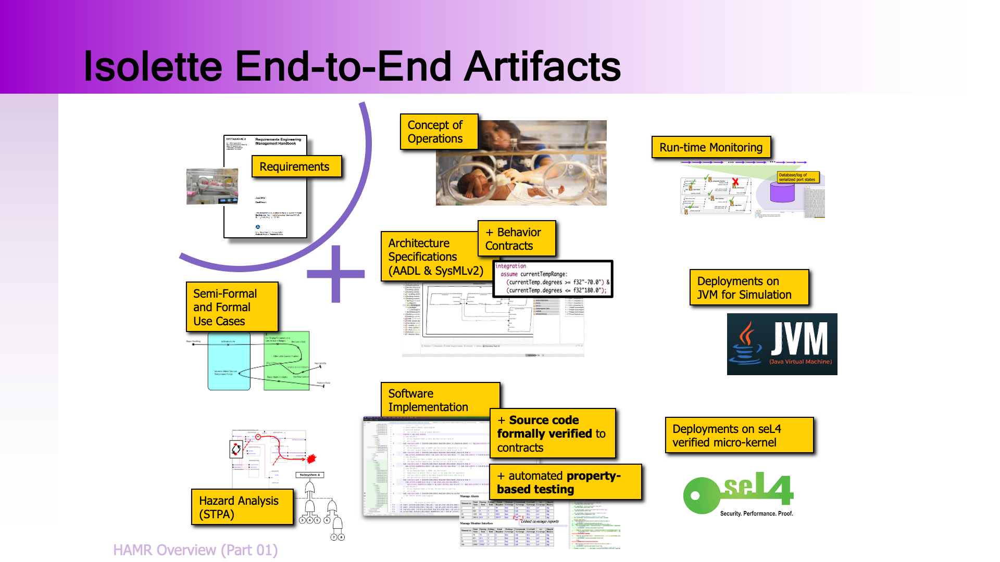
We’ve a lot of effort to put together an entire collection of development artifacts how HAMR and model-based development in general can support end-to-end development of critical systems.
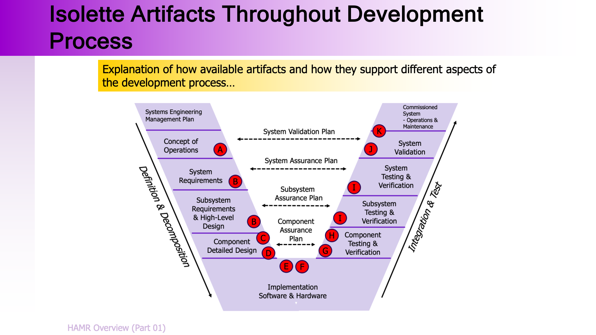
- The red circled letters indicate various development artifacts that we have available for the Isolette that illustrate this approach across the development process.
HAMR Modeling Themes and Scope
We now go through some of key themes of HAMR’s modeling layer, and we discuss what type of modeling HAMR supports and what it omits.
Model Generation Architecture
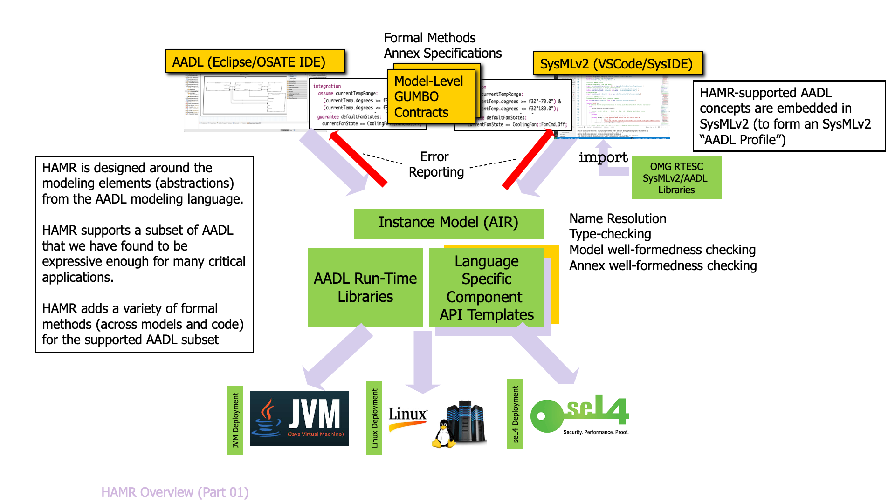
HAMR was originally developed to work with the AADL modeling language. To this day, even though its scope has expanded to address SysMLv2, the semantics of is supported architecture concepts are still derived from core notions of AADL. HAMR doesn’t address all of AADL. Instead, it supports a subset of AADL that we have found to be expressive enough to model the real-time tasking and communication found in many critical applications.
****** something is missing here *******
Intuitively, these libraries define an AADL profile for SysMLv2. Formal languages like GUMBO that we utilize in AADL are also carried over in to SysMLv2. Even though the specific syntax for modeling and formal specification is different in AADL and SysMLv2, there is enough similarity between them to immediately see correspondences.
HAMR adds a variety of formal methods designed to work together across models and code. One example is the GUMBO contract language that developers can use in models to specify pre and post-conditions of task actions as well as other forms of behavior constraints.
In the HAMR tool chain, models and specifications from both AADL and SysMLv2 are translated into the same intermediate language called air, which stands for architecture intermediate language. Common language processing tool steps such as name resolution, type-checking, model well-formedness checking, etcetera are all carried out on this common intermediate representation. HAMR’s backends translate this intermediate representation into code and system build artifacts for different programming languages and platforms. During these translations, HAMR utilizes run-time libraries for each platform that are designed to provide the same semantics across platforms. The code generation process also makes use of application code templates that are designed to be similar in structure regardless of the targeted programming language.
AADL Standard
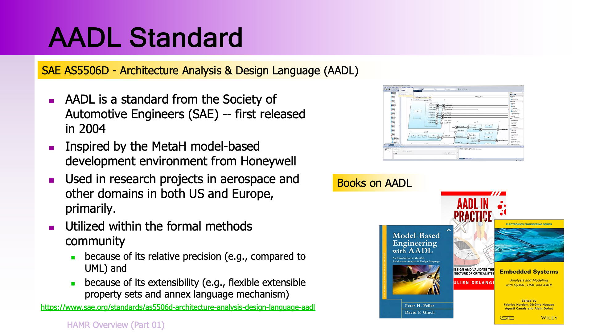
Let’s take a look at some of the key themes of AADL, and then we’ll see how some of these concepts are being realized in SysMLv2. There are separate chapters giving the details of using AADL and SysMLv2 for HAMR modeling.
AADL is a standard from the Society of Automotive Engineers, first released in 2004. It was inspired by the Meta H model-based development environment developed at Honeywell. It’s been used in research projects in aerospace and other domains in both U S and Europe. It’s been a favorite of researchers in the formal methods community because of its relative precision and because of its extensibility, that is, you can easily add new formal methods annotations and specifications to the base modeling language using the AADL annex mechanism. For example, the GUMBO contract language that we mentioned earlier was first introduced as an annex language of the base AADL modeling language.
HAMR Model Building Blocks with Faithful Code Generation
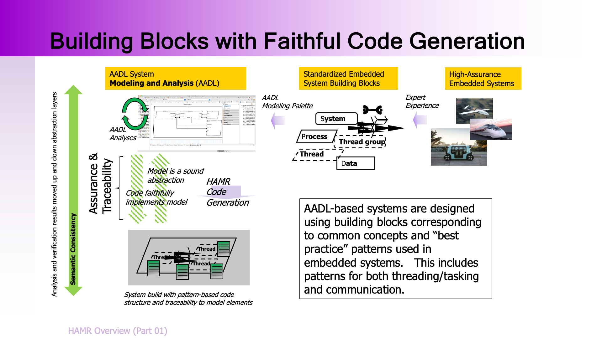
The goal of most engineering standardization efforts is to codify the experience of a community of experts into concepts, requirements, and guidance that develop canonical approaches or best practices in the community. In the AADL standards work, engineers with many years of experience in building high-assurance embedded systems identify collections of patterns and building blocks that are represented as modeling elements. These include patterns for both tasking and communication, as well as platform features like processors and communication busses. These building blocks provide a modeling palette for engineers to draw from when they outline the architecture of a system.
Work within the AADL committee and broader community developed various types of analyses that can be carried out on models before one ever starts developing source code. Example analyses include determining the potential resource utilization of the system including memory utilization, scheduleability of real-time tasks, and communication latencies. Moreover, developers can add various types of behavior constraints to models that they want to eventual software and hardware to obey.
The committee also developed implementation guidelines for these building blocks, and HAMR to a large extent follows those guidelines. Supplements from the AADL committee provided guidelines of how the general concepts in AADL could be mapped to widely used platforms such as the ARINC 653 framework used in the avionics community.
When HAMR code generation runs, it produces code and associated run-times that are aligned with the informal semantics of the AADL modeling elements. To make the informal semantics provided by the standards committee more precise, the HAMR research team has formalized the semantics of the subset of AADL used by HAMR in the Isabelle theorem prover. This enables us to prove the soundness of the various types of formal verification provided by HAMR. While we don’t yet formally prove the correctness of HAMR code generation, the formal semantics provides strong guidance in defining the code generation.
What this all means is that we can have a good degree of confidence that the HAMR generated code faithfully implements the building blocks as they are assembled in the model. Looking at it from the reverse direction, our models are a sound abstraction of the computation structure of the deployed system. This stands in contrast to a lot of what happens in industry practice today, where models are built for system design only, and then as code is developed by hand, the models are not kept up-to-date with the code. We refer to this as the model code non-alignment problem. In this situation, the models lose their value as engineering artifacts.
So how does it help us to keep the code aligned with the models so that the models can be a sound abstraction of the deployed system? Typically when you implement any sort of realistic system there’s a lot of details in the code that may not be directly applicable to certain types of analysis or assessment that you want to do of the system. Having a correct relationship between code and models allows one to check the models themselves for certain properties while avoiding the complexity and cost of trying to analyze the lower-level code and other implementation details. More generally, aligned models and code enable stakeholders to trust the models so they can confidently use them to explain the system to others, to direct system implementation and evolution, and to evaluate the system for safety and security.
To provide evidence that models and code are aligned, HAMR emphasizes the concept of traceability. When HAMR generates code, it also generates human readable reports as well queryable data structures that show the relationship between the models and the code. Engineers can actually trace how each model element is realized in both the code and lower-level micro-kernel configuration. For example, for each communication port on each thread component in the model, HAMR’s auto-generated hyper-linked traceability reports allow engineers to click through to see the exact Rust code that implements the port on each thread and to see the exact permission declarations and memory regions that allow the communication in the underlying microkernel. In the other direction, for each pre and post condition that HAMR inserts into generated code, engineers can directly navigate to the model-level specification and requirements associated with that behavior constraint.
These principles all support the assurance of HAMR built systems. Assurance is the task of convincing other people including auditors and certification authorities that the deployed system satisfies its architecture and behavior specifications, and more broadly, that the system is safe and secure. In contrast to other development approaches that suffer from the problem of non-aligned models and code, HAMR’s approach of providing evidence of structural and semantic consistency across all layers of development artifacts, even as the implementation evolves, significantly improves the assurance process and the overall confidence that one has in the system.
HAMR Model Building Blocks Implications
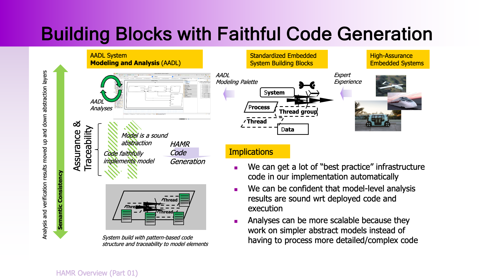
We now summarize some of the key points above.
-
By designing and implementing systems using AADL building blocks, we can obtain system designs and implementations that are aligned with best practices. These best practices generally ensure that the system is more easily analyzable for behavior properties, timing properties, for resource consumption, and for resiliency against internal faults and external attacks.
-
Due to HAMR code generation and guaranteed alignment of code architecture with models, we can be confident that model-level analysis results are sound with respect to deployed code and its execution.
-
Model-level analyses can be more scalable because they work on simpler abstract models instead of having to process more detailed complex code.
-
We can use the models to get an improved shared understanding of the system between teams and organizations. This supports allocation of work to teams and supports planning and debugging of integration before coding.
-
HAMR generates traceability information that documents alignment of models and code, and this information is kept up-to-date as models and code evolve. This traceability information supports HAMR’s broader automated assurance framework, that makes it less expensive for development teams to convince themselves and others that the system meets its specifications.
-
Because HAMR emphasizes abstract architecture building blocks whose implementation is made consistent by HAMR code generation across multiple platforms, and because of the multiple layers of abstraction in HAMR generated implementations, it is easier to port systems between HAMR supported platforms. This also makes it easier to add additional code generation back ends to HAMR tooling.
Example AADL Software Modeling Elements
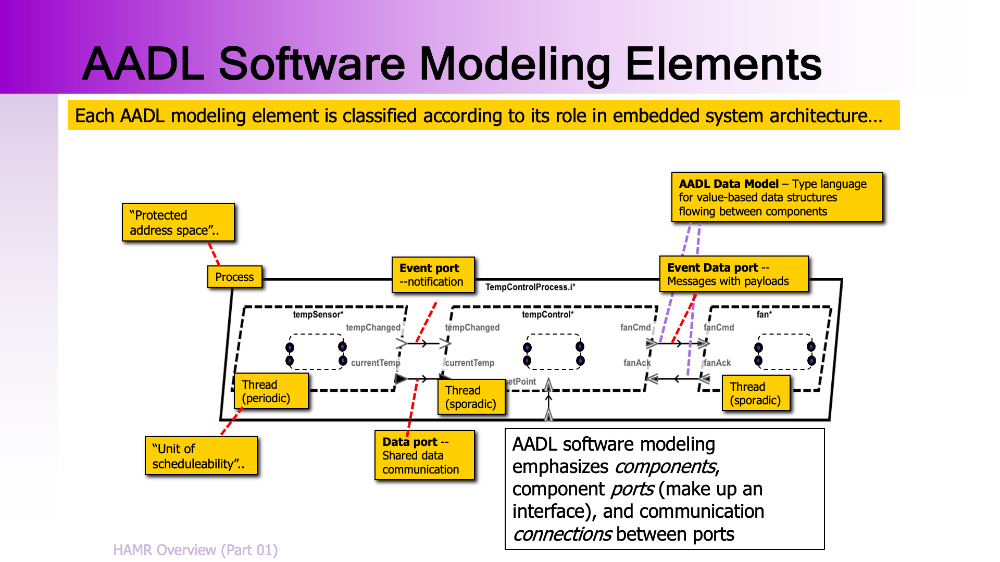
We take a quick look at a very small example to give you some idea about these building block concepts. We’re only going to look at a few AADL components for embedded software concepts.
AADL software modeling emphasizes components, component ports, and communication channels between ports. Each component is classified according to its role in embedded software architectures. In this example, you can see three thread components for a simple environment control system. There’s a temperature sensor thread that interacts with lower-level hardware sensors to acquire a temperature reading. A temperature control thread receives the current temperature and implements some control laws that determine if a cooling fan should be activated or not. Finally, a fan thread receives a control command indicating the desired on off state of the fan and then actuates the hardware controller for the fan accordingly. Even though AADL refers to these as threads, it’s more accurate to think of these as real-time tasks, as opposed to the threads that you might find in Java or C sharp.
The AADL standard informally indicates the semantics of a thread component. It’s intended to model a unit of scheduleability within a real-time system. The standard describes the component’s life cycle and how its execution gets activated upon a time out corresponding to a periodic thread or the arrival of a message corresponding to a sporadic thread. All of this comes together to determine how HAMR generates an application code skeleton and infrastructure code for a component. You can also see that the thread components are placed inside of an AADL process component. According to AADL’s informal semantics, a process component represents a protected address space. This also directs HAMR analyses and code generation. For example, when generating code for the seL4 micro-kernel, each process component causes a protected memory region to be implemented as a seL4 kernel partition.
You also have different building blocks for communication, as indicated by the different triangle icons used for component ports. For example, a solid triangle is the notation for an AADL data port which specifies that the port will communicate data using an unbuffered shared memory region. A triangle with an outline but empty contents denotes an event port which enables one component to signal another. A triangle with an outline and filled contents denotes an event data port which indicates communication via buffered messages as might be realized by message passing middleware such as D.D.S or M.Q.T.T. As with the components, each of these communication building block categories determine how HAMR generates APIs for component communication as well as infrastructure glue code that gets used behind the scenes for inter-component communication.
Example AADL Software Modeling Properties
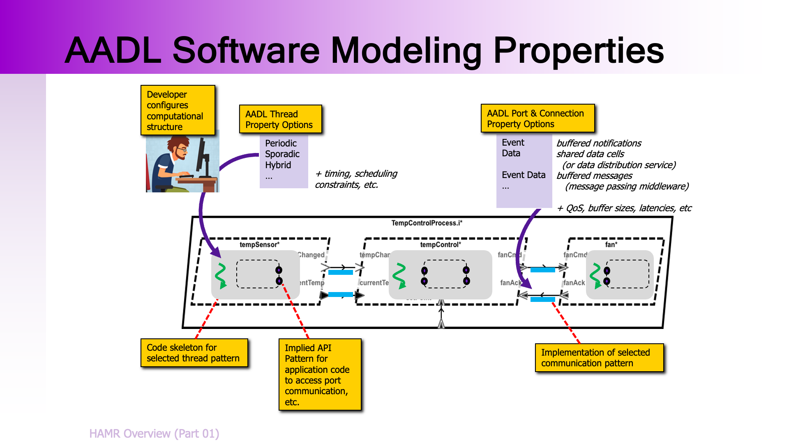
When you use AADL, you’re not just drawing boxes and lines. You’re also using AADL properties to configure the semantics of the modeling elements. For example, for threads you can configure a property to indicate if you want the thread to be time triggered, event triggered, etc. For ports, you can use properties to specify the size of buffers, overflow policies, and so forth. When HAMR generates code, these properties determine the nature of the code generated including the type of threading infrastructure generated, the code that integrates the thread with the underlying scheduling framework, the implementation of communication channels between components, and the type of application APIs generated for port communication.
For HAMR formal methods like GUMBO contracts, the properties the structure of the contracts that developers will use as well as various verification conditions that get generated.
AADL Has Linked Graphical and Textual Views
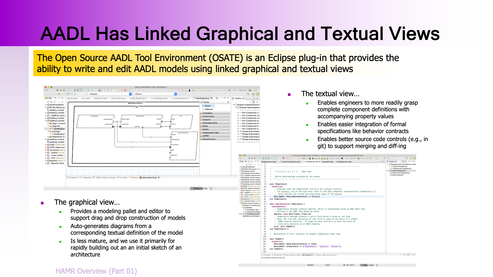
When we edit AADL models with HAMR we use the open-source Eclipse-based I.D.E. called OSATE. HAMR capabilities are accessible via an OSATE plug-in.
AADL provides both graphical and textual view for editing models. Regardless of the view that you use, the other view is kept up to date.
-
The graphical view provides a modeling pallet and editor to support drag and drop construction of models. It can also auto-generate diagrams from a corresponding textual definition of the model. Overall, the graphical editor is less mature than the textual editor. We use it primarily for visualizing models created with the textual view or for rapidly building out an an initial sketch of an architecture by dragging and dropping model elements.
-
In our opinion, the textual view enables engineers to more readily grasp complete component definitions because they can readily see accompanying textual property attributes for the component. The text-based view also enables easier integration of formal specifications like behavior contracts that are inherently text-based. It enables better source code controls, for example in Git, to support merging and diff-ing. It more easily integrates A.I. support as the use of L.L.M.s increases.
Overall, we tend to focus heavily on creating and editing models in the text based view, and using the graphical view only to create summary visualizations of models.
Motivation for SysMLv2
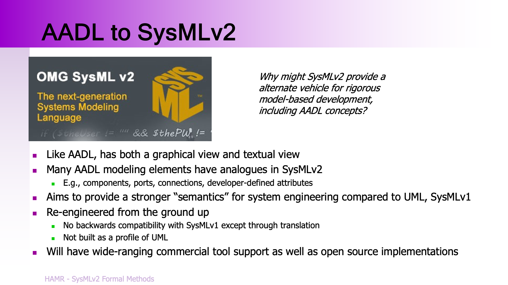
Despite the many strong engineering concepts that AADL has contributed, it’s had trouble gaining traction in industry. That’s also impeded the ability to transfer into practice the formal methods concepts that have been illustrated using AADL. Adoption of AADL was stymied by the fact that, compared to modeling languages like the original SysML, it’s scope is narrower. SysML version one with its companion U.M.L. enabled modeling of interactions with entities in a system’s environment, modeling of use cases, which AADL didn’t support. Moreover, AADL strong semantic interpretation of modeling elements, was viewed as less flexible within industry. When AADL was used, it was typically in awkward workflows where general models were built in SysML and then subsets of these were translated to AADL for deeper engineering tasks. This mean that organizations needed multiple expensive modeling tools and double training for multiple languages. Moreover, there was technical debt associated with maintaining two sets of models and translations between them. Another problem has been that no major tool vendors have provided full support for AADL. So, despite it’s engineering strength, it has not had a commensurate practical impact.
Work on a new version of SysML begin in 2017. That work has incorporate some of the concepts championed by AADL including both textual and graphical notations as well as a stronger semantics. Moreover, SysMLv2 retains flexibility that industry liked. Therefore, around 2023, instead of continuing work on the AADL standard, the AADL standards commmittee begin to place emphasis on transitioning AADL concepts into the emerging SysMLv2.
Why might SysMLv2 provide a good vehicle for rigorous model-based development, including AADL concepts? Like AADL, SysMLv2 has both a graphical view and textual view. Many AADL modeling elements have analogues in SysMLv2. This includes things like components, ports, connections, and developer-defined attributes. SysMLv2 aims to provide a stronger semantics for systems engineering compared to U.M.L. and SysMLv1. SysMLv2 is not tied to some of the problematic foundations of SysMLv1. It has been completely reengineered from the ground up. There is no backwards compatibility with SysMLv1 except through translation. It’s not built as a profile of U.M.L. Instead, it’s built on a new core modeling language called KerML. Finally, compared to AADL, it will have wide-ranging commercial tool support as well as open source implementations.
Standardization Effort Migrating AADL to SysMLv2

Given this better opportunity for tech transition, key members of the AADL community organized a working group within the OMG to transition AADL concepts into SysMLv2. This working group, called the Real-Time Embedded Safety-Critical Systems, abbreviated RTESC, is also mandated to include best practices from other modeling frameworks that target critical systems.
The essence of the approach is to standardize SysMLv2 libraries of AADL concepts and guidelines for representing AADL models in SysMLv2. Both the Kansas State and Collins Aerospace teams are actively involved in this committee work, and are acting as trail blazers to evaluate committee proposals in the modeling of real systems and to propose additional concepts for how formal methods can be integrated.
SysMLv2 Modeling with AADL Concepts
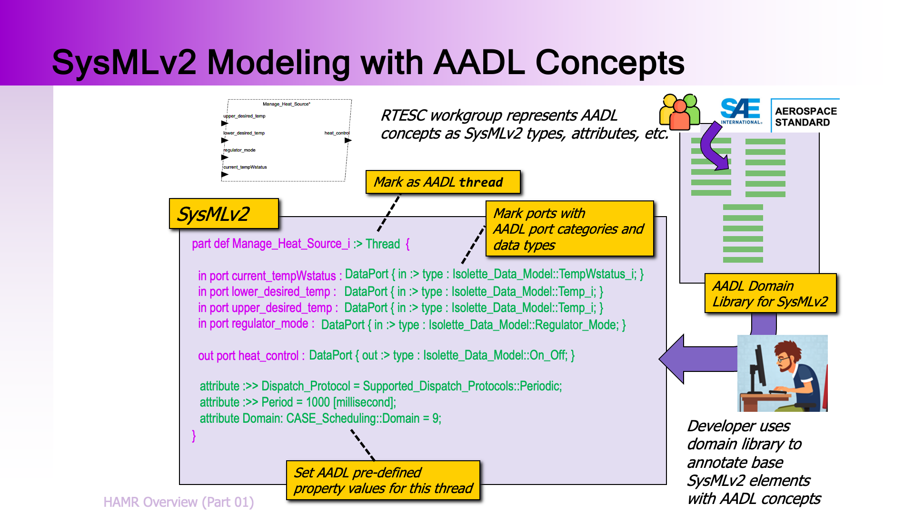
Here’s a brief overview of how you use AADL concepts in SysMLv2.
-
First, you import these committee-developed AADL domain libraries into your SysMLv2 project.
-
Then you develop the primary structure of your component interfaces using SysMLv2 features such as parts and ports.
-
Then you use domain library to annotate base SysMLv2 elements with AADL concepts.
For example, we can mark this SysMLv2 part as an AADL thread. We can mark the ports with the specific AADL port categories and types to be used. Furthermore, we can attach AADL pre-defined property values for this thread, for example, indicating that the thread is periodic with a one thousand milli-second period.
AADL and SysMLv2 Notations are Similar
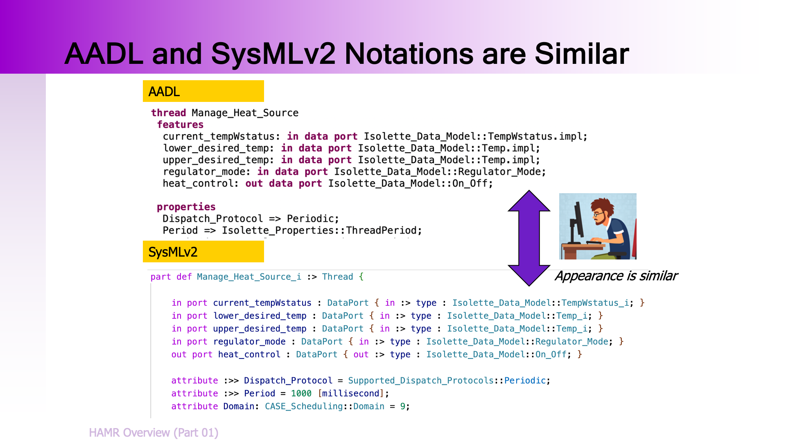
If you put the AADL and SysMLv2 side-by-side, you can see that they are very similar, which really helps us migrate our industrial developers between the two.
VSCode SysMLv2 HAMR Front End
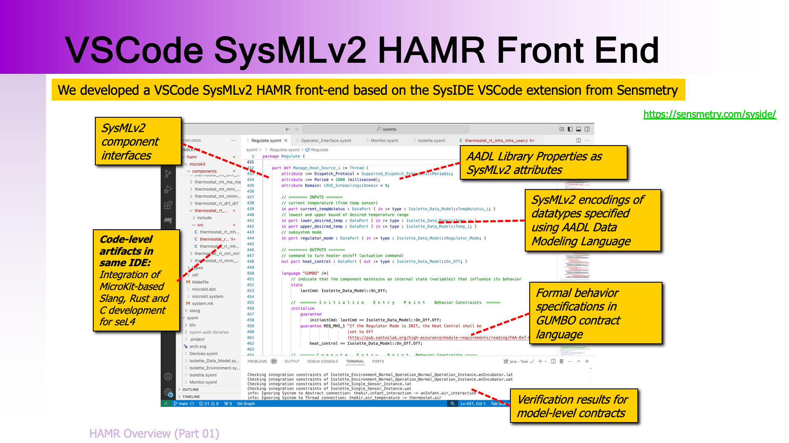
We have developed a SysMLv2 HAMR front end using the SysIDE VSCode extension from a company called Sensmetry. In the screen shot above, you can see component interfaces defined in SysMLv2. AADL properties are stated as SysMLv2 attributes using the OMG RTESC working group libraries. Data types are specified using a SysMLv2 representation of the standardized AADL Data Modeling language.
We’ve implemented extensions to the base SysMLv2 language that enable our GUMBO contract language and other formal specifications to be included in SysMLv2 models. The HAMR plug-in performs several forms of model verification.
When HAMR generates code and system builds, you can work with the code and build artifacts right in the same IDE.
Model Level GUMBO Behavior Contracts
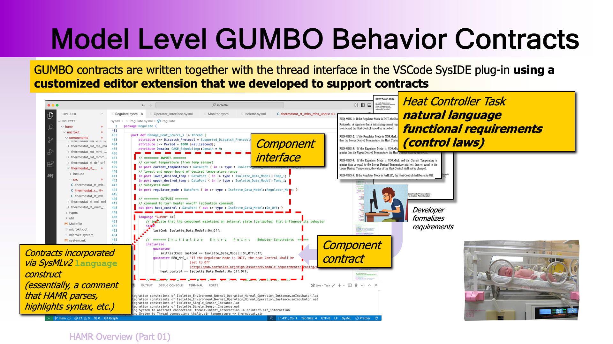
One of the key themes of HAMR is supporting formal specifications that are integrated across the model and code levels. This slide illustrates the intuition that the developer has for adding model level GUMBO behavior contracts that will be translated by HAMR to the code level to support automated testing and verification.
As a developer uses SysMLv2 to design a thread interface consisting of input and output ports, he can optionally provide additional contract specifications that indicate some of the desired behavior for the thread. These contracts may define constraints that must always hold for values coming in or out of ports. Or, the contracts may establish stronger constraints that indicate what the output port values should be under specific input conditions. Typically, these formal specifications would be derived from informal natural language requirements for the component.
The HAMR extension to the SysIDE editor provides syntactic checking of the contracts as well as certain forms of model level contract verification.
Model Level GUMBO Behavior Contract Example
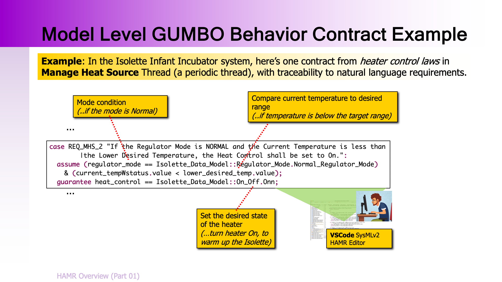
Here’s a closeup look at part of a contract from the Isolette Incubator which is specifying some logic to control an air heater to keep a baby warm. In this case we have input ports for the system mode, the current temperature, and the desired temperature range. The job of this thread is, on each activation, to send an output command to turn the heater on or off.
This contract clause specifies one of the control laws for the thread. Each of the control laws indicate the output command to the sent under certain input conditions. Specifically, this clause says that if inputs indicate that the system is in normal mode, and the current temperature is less than the lower bound of the desired temperature range, then after the thread finishes its activation step, the output command should turn the heater on, because we want the air to warm up in this case.
HAMR Actions in VSCode SysMLv2 Editor
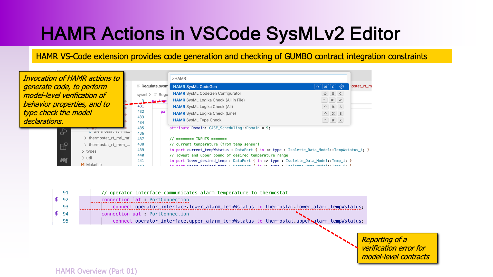
The HAMR extension also exposes various actions in the VSCode command pallete that the developer can invoke. There are actions to generate code, to perform model-level verification of behavior properties, and to type check the model declarations.
The screenshot fragment at the bottom of the slides shows one way in which the HAMR plug-in indicates a formal verification error. In this case, verification finds an erroneous situation where the output specification of one component is incompatible with the input assumptions of a component to which it sends data.
HAMR Code Generation Concepts
Let’s now discuss the general character of HAMR’s code generation.
HAMR Code Generation Approach
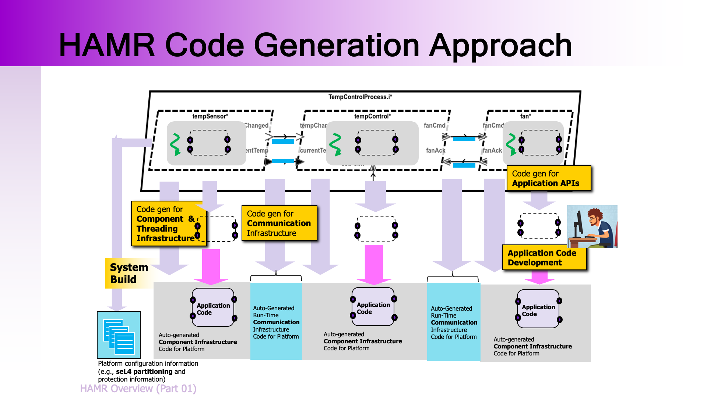
It’s important to understand that HAMR doesn’t aim to generate all the code for the system. Instead, given a model that specifies how the architecture building blocks are assembled, it will generate code skeletons for the declared thread components, and it will generate what is commonly referred to as “glue code” for integrating all the components with the target platform’s communication and scheduling infrastructure.
Specifically, for each thread component, code generation will set up threading infrastructure that matches the periodic or sporadic dispatch protocol indicated by the thread’s declared attributes in the model.
Similarly, for each component connection, code generation will generate a communication pathway on the target platform that matches the selected communication pattern.
HAMR will typically generate additional platform information that configures the underlying communication and computation partitioning. This may includes things like configurations for components that host virtual machines.
What’s more relevant for the developer is that HAMR generates a thread skeleton and port APIs for each component. These also hide the details of the particular platform and enable a degree of portability for the application code.
Then the developer fills in those skeletons and uses the port APIs to code the application logic. Along the way, auto-generated code-level testing and formal specifications help the developer ensure that the developed application code conforms to model-level GUMBO contracts.
It’s important to note that HAMR expects the models to continue to evolve incrementally as the system is developed. Therefore, HAMR organizes the code generation process so that code generation can be run on updated models to generate updated versions of the code, and this is done is such a way to avoid clobbering application code that the developer has previously written.
We’ll provide an overview of these code-level activities in the remaining parts of this lecture.
HAMR Code Generation for seL4
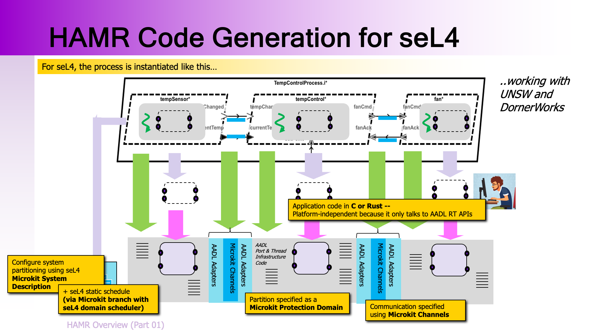
To make this a bit more concrete, here’s an overview of how this general approach is instantiated for seL4 using the MicroKit framework.
On the bottom left, HAMR-generated platform configuration information includes the specification of the kernel partitions using the MicroKit System Description file. Information and infrastructure elements necessary to implement the developer-specified static schedule is also generated, along with a variety of build scripts.
In the lower middle, partitions for hosting the system threads and virtual machines are derived automatically from the specification of the MicroKit protection domains. HAMR generates glue code to connect the application threads into the MicroKit protection domains. This includes infrastructure code to implement the semantics of the periodic or sporadic dispatch protocol specified for the thread.
In the lower right, HAMR generates infrastructure code that utilizes MicroKit primitives to achieve the communication semantics associated with model-declared port categories such as data, event, or event data.
Then, most apparent to the developer is that HAMR generates Rust or C code skeletons that the developer fills in to code the application logic for the thread component. HAMR also generates developer-friendly APIs that are used in the application code to send and receive data between partitions using the model-declared input output ports.
HAMR Traceability Framework Concepts
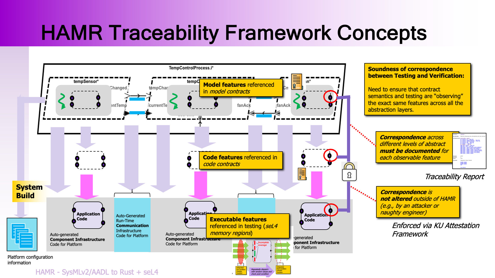
We’ve emphasized that HAMR’s keeps models and auto-generated code and even model-level contracts and code-level contracts and testing infrastructure aligned as the system evolves. HAMR auto-generates user-friendly traceability information documenting the correspondences between all of these artifacts. This plays a key role in establishing trust in the code generation process and assurance of the system. It also aids in well-known certification tasks of showing traceability between system requirements, code, tests, and verified properties.
In addition, for you to be able to seamlessly switch between testing and verification across all of these different levels of abstraction, the underlying theory of HAMR has a notion of observation points at which you are observing the system behavior either using formal contract specification or testing.
To justify the soundness of the framework, you need to know the exact correspondence of the observation points across all the different layers of models and code. For example, when working with seL4, for a port referenced in the model, you need to know the infrastucture code and application API that implements the port, and you need to know the realization of the port as an seL4 protected memory region. Thus, when you make a contract constraint on a component port in the model, developers, audits, and certifiers can know the exact memory cells in the kernel configuration whose contents are being constrained. For such things (and in many other things), HAMR auto-generates traceability reports that establish this correspondence.
Moreover, for the framework to be fully trustworthy, you want to know that the correspondence established by HAMR is never altered in any way by an attacker or lazy engineer. For example, you don’t want the developer hand-modifying the auto-generated code, adding a secret interface not exposed in the model, and you don’t want them declaring an additional communication pathway in the seL4 kernel specification that was not declared in the model. To detect such unauthorized alterations or even just to detect that the models were changed without running code generation again, HAMR uses an life-cycle attestation framework developed by the University of Kansas. The attestation framework uses a variety of cryptographic signature strategies to ensure that appropriate model, code, and kernel correspondences established by HAMR are preserved in the deployed system.
Assurance and Traceability Reports
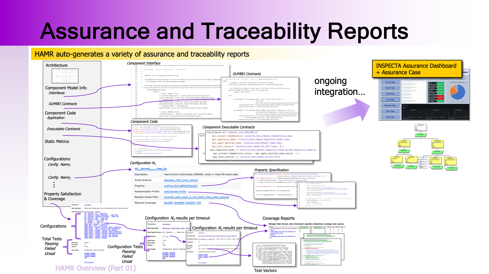
As part of its traceability reporting, HAMR generates hyperlinked markdown files that can easily be included in Git repositories to enable developers to navigate related artifacts directly from the web interface of the repository. For example, a list of all model-declared thread components is generated along with hyperlinks to the model-declarations in SysMLv2, application code in Rust, and MicroKit protection domain specifications for the component and its ports. Then, for model-level contract information, hyperlinks are generated to corresponding code-level contracts and contract-based test oracles used in testing. Furthermore, for different test configurations, test coverage reports are automatically linked.
All of the abstract relationships in this markdown format are also directed into a comprehensive assurance dashboard being developed by Collins Aerospace. This includes the ability to directly reference all of the above HAMR artifacts as part of a broader assurance case that might be used to support certification.
HAMR Scope and Application Strategy
Now that we’ve presented some of the main capabilities of HAMR, let us close out this part of the lecture by discussing in what type of situations it can be most effective.
HAMR Scope and Formal Methods Pipeline
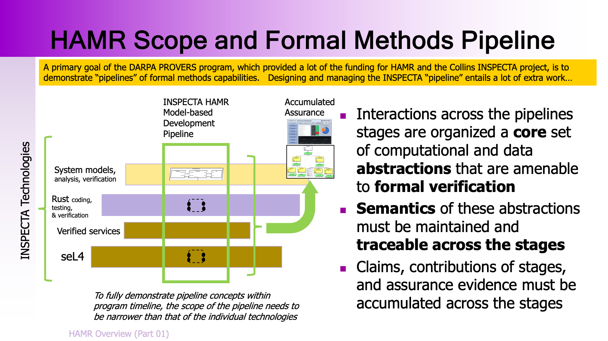
A primary goal of the DARPA PROVERS program, which funds HAMR and the Collins INSPECTA project, is to demonstrate pipelines of formal methods capabilities. INSPECTA is building out a number of different technologies. For example, it’s providing new developments on for seL4, new Rust verification capabilities, in the Verus analyzer, and modeling support for SysMLv2.
All these can be use independently of each other if you want. For example, you can use the new features of seL4 broadly without using the model-based code generation that I’ve provided by HAMR. You can use Rust with Verus more generally without aligning it with the specific Rust code produced by HAMR.
However, what’s especially important for meeting the objective of the PROVERS program is to coordinate and integrate all of these technologies together in a pipeline. And that takes a lot of extra work. The methods of specification and the accumulation of verification evidence must be integrated across multiple layers of abstraction and across multiple formal methods. To fully demonstrate pipeline concepts within the project timeline, the scope of the pipeline needs to be narrower than that of the individual technologies.
Moreover, to coordinate the individual technologies through end-to-end development, one needs a core set of computational and data abstractions that are amenable to formal verification. The semantics of these abstractions must be maintained and traceable across the stages.
Finally, the claims and assurance evidence must be accumulated and documented across the stages of the pipeline as seen on previous slides.
HAMR Formal Semantics for INSPECTA Pipeline
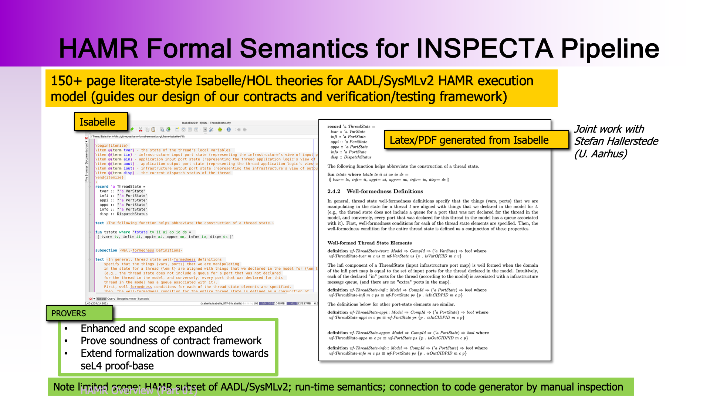
The design and implementation of the pipeline is guided by a mechanized semantics for the core abstractions and semantics of run-time execution in Isabelle HOL. There are no proofs of correctness for the HAMR code generation yet, and the HAMR users really don’t interact with this semantics. We use the semantics for example, to prove the soundness of the verification and testing frameworks in terms of the abstract execution model in the semantics. We’re hoping to develop a refinement of the semantics down to a formal model of seL4 MicroKit execution.
Assessing the Applicability of HAMR
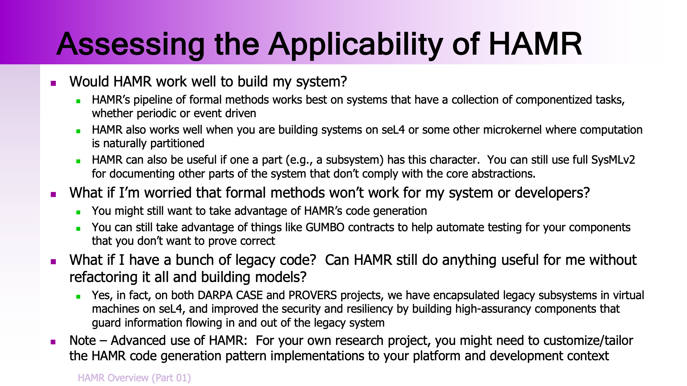
So given this clarification of HAMR’s emphasis and scope, how do you decide if using HAMR would be appropriate for your context?
First, if you want to apply HAMR’s formal methods pipeline, that works best of systems that have a collection of componentized tasks, whether periodic or event driven. If you want to go beyond HAMR’s existing backend code generators and build your own, the HAMR modeling and code generation approach would in general be applicable to systems that emphasize message passing middleware for communication between components. For example, we were able to build a prototype backend for ROS, the robotics operating system, with little difficulty because it emphasizes components that communicate over message passing middleware like D.D.S.
HAMR also works well when you are building systems on seL4 or some other microkernel where computation is naturally partitioned. HAMR can also be useful if one part of the system, for example a subsystem, has this character. You can still use full SysMLv2 for documenting other parts of the system that don’t comply with HAMR’s core abstractions.
You may be worried that formal methods won’t work for your system or developers. You can still take advantage of HAMR’s code generation. You can still take advantage of things like GUMBO contracts to help automate testing for your components that you don’t want to prove correct. All of this allows developers to get started with being overwhelmed by formal methods and then introduce formal methods gradually, perhaps focusing on components that are most critical.
What if you have a bunch of legacy code that you don’t have models for or that doesn’t match HAMR’s core abstractions? Can HAMR still do anything useful without refactoring it all and building models? Yes, in fact, on multiple defense-related projects, we have encapsulated legacy subsystems in virtual machines on seL4, and improved the security and resiliency by building proven correct components that guard information flowing in and out of the legacy system.
Incremental Introduction of HAMR Capabilities
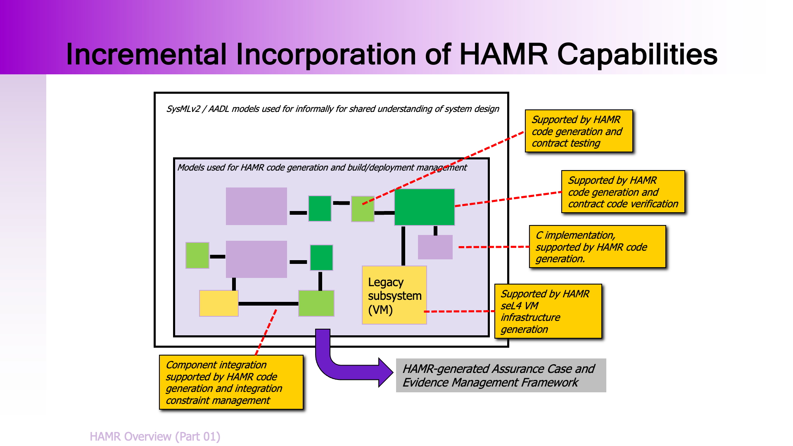
This graphics on this slide give some intuition about how HAMR and its associated formal methods tools can be introduced incrementally into a development context on top of seL4.
The boundary of the outer white box indicates that the non-HAMR-aligned portions of SysMLv2 can be for any part of the system that you want, if you are just interested in documenting the architecture of that portion of the system. Then for the parts of the system whose deployment is managed by HAMR, legacy subsystems that are infeasible to model or use formal methods for can be hosted in virtual machines. Given a model of virtual machine inputs and outputs, HAMR can be used to help configure the virtual machine and its associated seL4 partition.
The lavendar components indicate that HAMR can be used to define interfaces and generate seL4 infrastructure for components that don’t use the full formal methods pipeline. These include components written in C, or some other language for which you don’t want to use HAMR’s specific real-time task abstractions.
The light green components denote those that use the full HAMR abstractions and contracts, but are just verified with HAMR supported testing, including HAMR’s automated property-based testing.
Finally, the dark green components denote that those to which the full HAMR pipeline is used to support components written in Rust and verified with Verus.
The Remaining Parts of this Overview Lecture
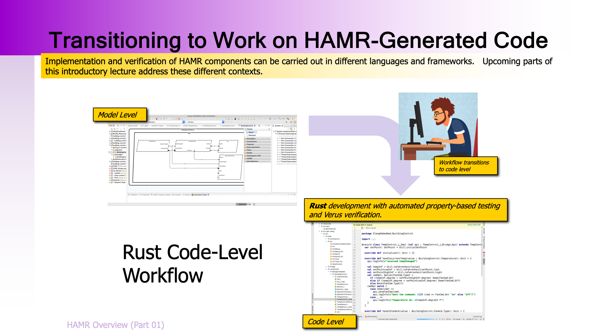
We hope this portion of our introduction to HAMR has been useful for you. HAMR supports code generation and verification in multiple languages, so we decided to specialize the remaining parts of the lecture for the specific language development context. Please see our webpages for overviews of Rust, Slang, and C-based development.
For example, one of the parts covers Rust-based component development with automated property-based testing and verification with Verus.